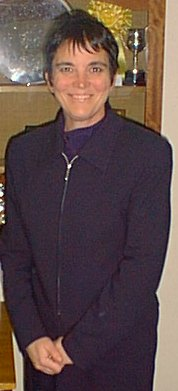

|
Charters Web Site is intended to give you information about the school and, combined with the opportunity of meeting us, an idea of the kind of school Charters is. We believe in setting the highest possible standards in everything we do. Each pupil at Charters is recognised as an individual and encouraged to develop to his or her full potential. We set high standards of appearance and behaviour seeking to provide an ordered, but caring and happy environment in which pupils can flourish. We want keen pupils who will take part in the whole life of the school and who are encouraged by their parents. It is important that we build a close relationship between the home and the school, so that difficulties can be shared, problems resolved and success congratulated. If your child is accepted at Charters I hope that you will visit the school regularly to see how your child is progressing. In 1996 the official Ofsted inspection under the government's regulations acknowledged that Charters is - 'an
excellent school" with "outstanding features which include its excellent atmosphere and good examination results".
I am very proud to be the Headteacher of this outstanding school and I look forward to meeting you and working
with you to ensure its continued success.
MARCIA TWELFTREE
|

|